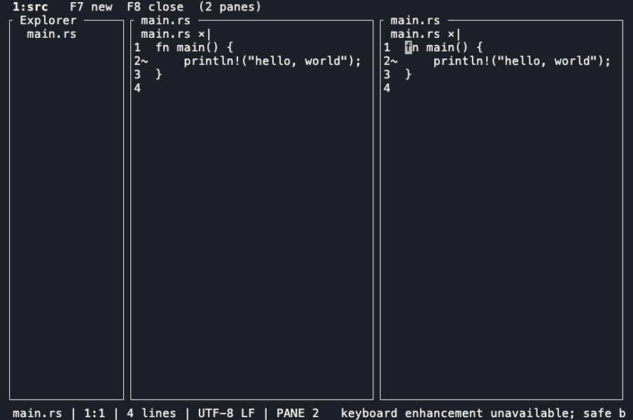

A keyboard-first terminal text editor. Panes that tile or tab, workspaces with their own roots, Git markers and hunk staging, LSP completion and diagnostics, Lua plugins, and an AI harness where every destructive tool needs your approval.
curl -fsSL https://raw.githubusercontent.com/afi3/i3-editor/main/install.sh | sh
Runs in any 256-colour terminal; no GUI, no Electron.

Every action is a command, and every command is reachable from the palette.
Split, move, resize, or turn a split into tabs. Layout invariants are enforced, so a
pane never disappears below 4×10 cells.
Each workspace keeps its own root, panes, quick-open index, and terminal directory. Switching never loses cursor or scroll.
Per-line markers, unified diff overlay, stage or unstage a single hunk, commit, branches, log, fast-forward pull, and conflict resolution as one undoable edit.
Completion (with textEdit ranges), hover, go-to-definition, and gutter
diagnostics. Servers start lazily; a crash never blocks editing.
Lua 5.4 hooks can register palette commands, keymaps, and statusline entries. Filesystem and process access stay off unless you enable them.
OpenAI-compatible chat over curl, streaming, budgets, and persisted
history. Tools come from MCP servers and a native read/search/edit set confined to the
workspace; every destructive call asks first.
Dirty buffers are swapped once per second into a per-instance directory. After a crash the editor offers save, reload, or keep — and asks again when the file moved on.
Layout, tabs, cursors, folds, and scroll are snapshotted per workspace root, so two editors in different projects never overwrite each other.
Multi-cursor, column selection, folds, auto-indent from .editorconfig,
line-ending conversion, search and replace across files, and Markdown rendering in the
gutter.
Defaults; every binding can be remapped in [keys].
| Ctrl+P | Quick open a file in the workspace |
| Ctrl+Space | LSP completion at the cursor |
| Ctrl+S | Save; asks before overwriting an external change |
| Ctrl+Q | Quit; offers “save all and quit” |
| Ctrl+1…9 | Switch workspace |
| F9 | Fullscreen the focused pane |
| F10 | Move mode: arrows move the pane |
| F1 | Command palette |
The script verifies the release checksum and installs to ~/.local/bin.
curl and tar (present by default)git, a language server, lua not required (bundled)
Windows is compile-checked in CI but not supported or released. Sandboxed
native/verify needs macOS sandbox-exec or Linux
bwrap.